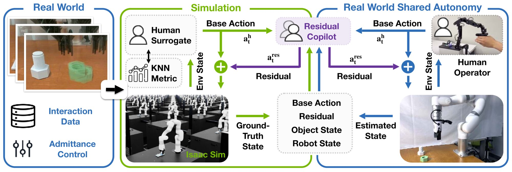
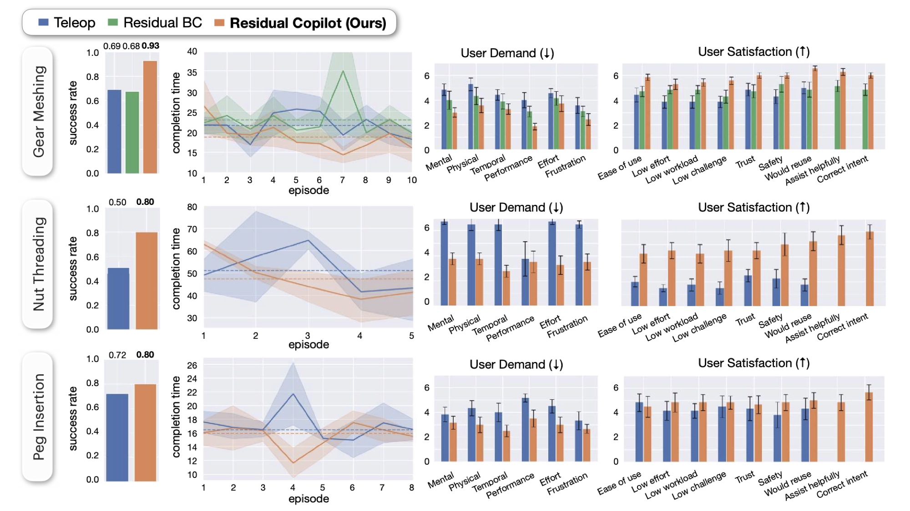

(Video has sound.)
Fine-grained, contact-rich teleoperation remains slow, error-prone, and unreliable in real-world manipulation tasks, even for experienced operators. Shared autonomy offers a promising way to improve performance by combining human intent with automated assistance, but learning effective assistance in simulation requires a faithful model of human behavior, which is difficult to obtain in practice. We propose a real-to-sim-to-real shared autonomy framework that augments human teleoperation with learned corrective behaviors, using a simple yet effective k-nearest-neighbor (kNN) human surrogate to model operator actions in simulation. The surrogate is fit from less than five minutes of real-world teleoperation data and enables stable training of a residual copilot policy with model-free reinforcement learning. The resulting copilot is deployed to assist human operators in real-world fine-grained manipulation tasks. Through simulation experiments and a user study with sixteen participants on industry-relevant tasks, including nut threading, gear meshing, and peg insertion, we show that our system improves task success for novice operators and execution efficiency for experienced operators compared to pure teleoperation and shared-autonomy baselines that rely on expert priors or behavioral-cloning pilots. In addition, copilot-assisted teleoperation produces higher-quality demonstrations for downstream imitation learning.
(Video has sound.)
• Side-by-side comparison of copilot-assisted and direct teleoperation with the same subject.
• Copilot reliably improves task performance.
• Evaluation of DPs trained on same amount of successful direct teleop. vs. copilot-assisted teleop data (both 34 demos).
• Evaluated on the same 20 randomly sampled in-distribution initial configurations (left/right blocks share identical initial states).
• DP trained on copilot-assisted data improves grasp rate 6/20 → 19/20 and insertion rate 0/20 → 9/20.
(All videos 3x speed)
We present a real-to-sim-to-real shared autonomy framework that builds a lightweight human surrogate from minimal teleoperation data to train a residual copilot in simulation. At deployment, the copilot provides low-level assistance to human operators.

(Video has sound.)
• Side-by-side comparison of replaying teleop trajs vs. copilot assisting these same teleop trajs.
• Click to select task.
| Task: |
(All videos 1x speed)
• Objectively, copilot assistance improves success rate and reduces completion time.
• Subjectively, copilot assistance reduces user burden and improves satisfaction.

• Comparing residual copilot's performance against baseline copilots on different pilot models.
• Click to select task and pilot model.
| Task | Pilot Model | ||||
(All videos 1x speed)
We release all artifacts necessary to reproduce our results in a Hugging Face collection: shashuo0104/residual-copilot. The collection contains:
• Datasets for all real-world and simulation demonstrations.
• Robot, object, and camera assets for simulation.
• Checkpoints for all pilot and copilot policies.